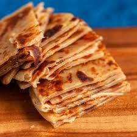

Chapati recipe

Ingredients
- Wheat flour - 1kg
- Cooking oil - 250 ml
- Salt
- Clean water - 1 litre
Steps to prepare
- Mix the flour with the water until a heavy thick dough is made.
- Add salt and a little bit of cooking oil.
- Get a cooking pan.
- Roll the dough into small chunks and spread them using a rolling pin.
- Add cooking oil to the cooking pan and start cooking the chapati.
- Continuously add oil to the pan and then flip on sides until brown and well cooked.
- Serve alongside ccooked beans or any other grain supplement.
Return to home page